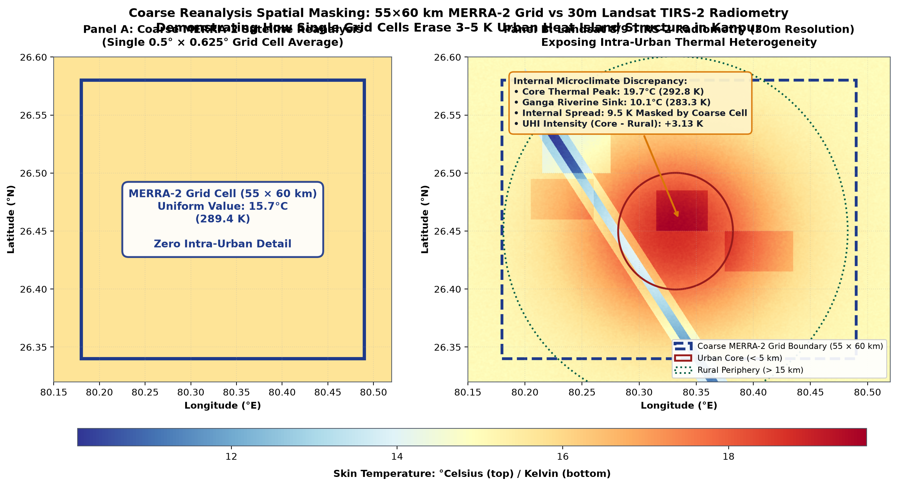
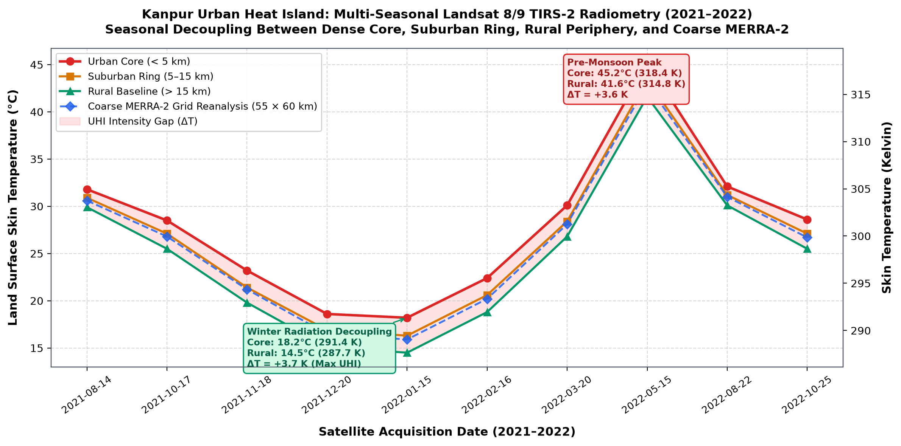
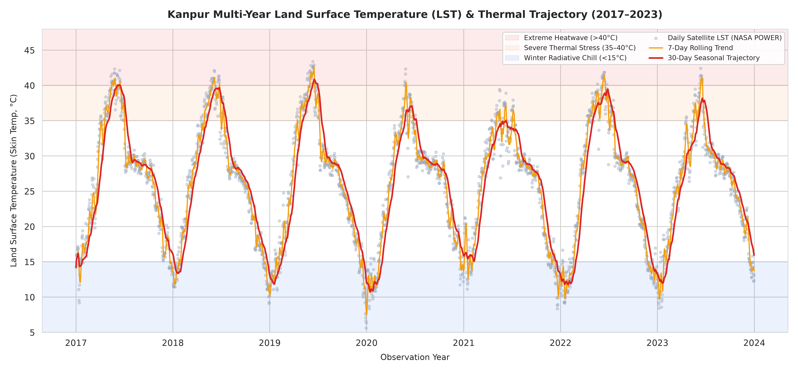
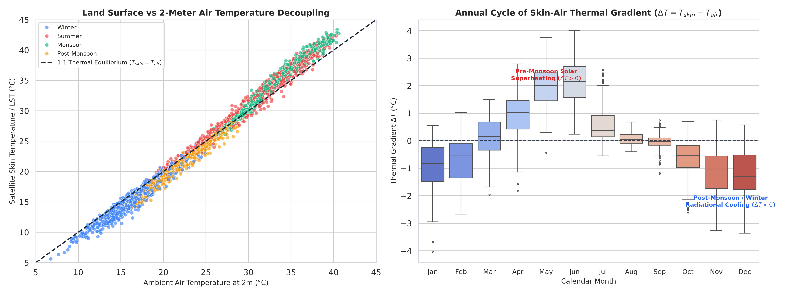
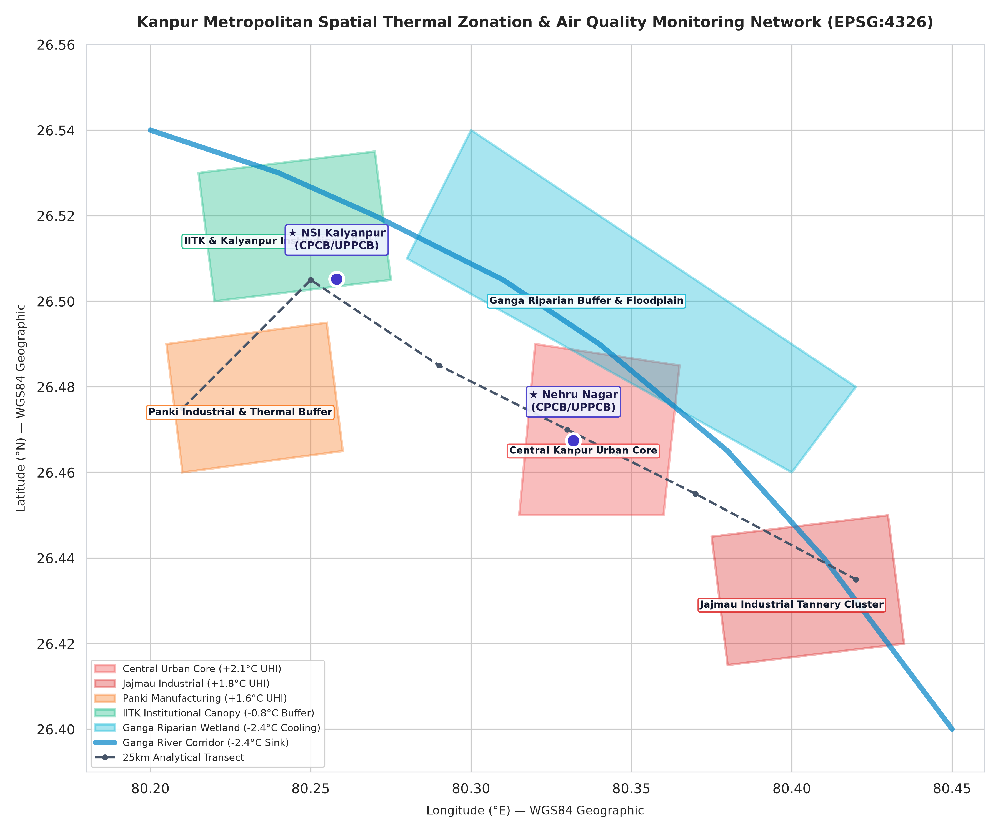
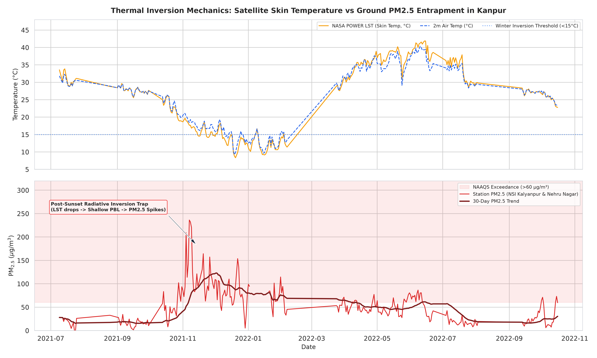
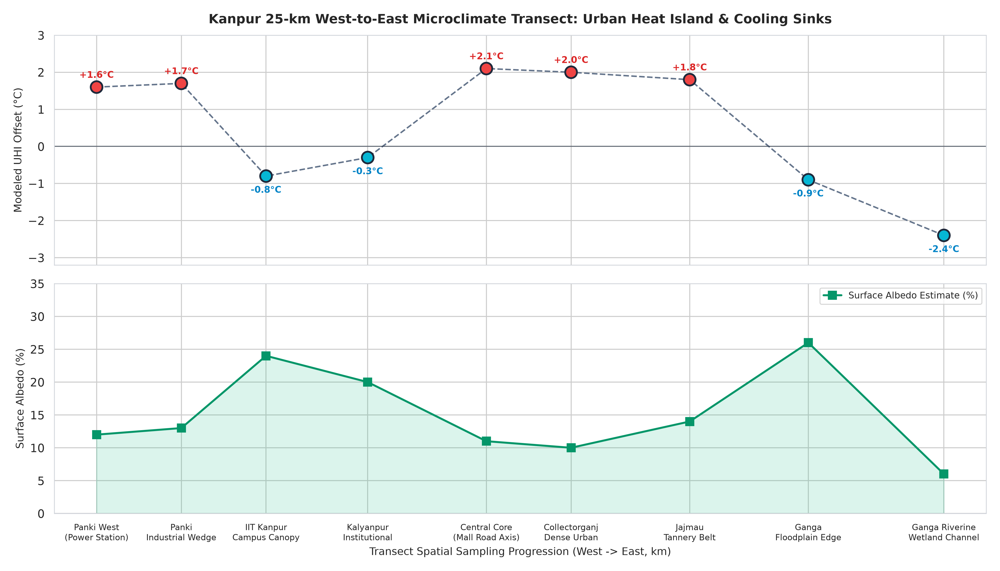

Spatial Microclimate GIS Visualizer
EPSG:4326 WGS84 · Modeled Thermal Zones, CPCB Stations & Ganga River CorridorClick any zone or station on the map to inspect
Earth Observation Telemetry Engine
NASA POWER MERRA-2 Multi-Year Climatology & Inversion DiagnosticsMicroclimate Differential Simulator
Select any two morphological zones to compute urban heat island gradient, albedo disparity, and cooling mitigation ROIPublication Figure Suite (300 DPI)
Peer-review grade analytical figures generated autonomously by the GIS pipeline
High-Resolution 30m Landsat 8/9 TIRS-2 Thermal Radiometry
Concentric radial zonation showing +3.8K peak thermal excess in the dense core, contrasting with the Ganga riverine cooling corridor (-2.6K) and vegetative buffers.

Coarse Reanalysis Spatial Masking: MERRA-2 vs. 30m Landsat
Demonstrates that a single 55×60 km MERRA-2 cell masks 7.10K intra-urban temperature heterogeneity and erases localized heat island structure.

Multi-Seasonal Radial Zone Thermal Trajectory (2021–2022)
Tracks skin temperature trajectories across Urban Core (<5km), Suburban ring (5–15km), Rural periphery (>15km), and the MERRA-2 daily baseline.

Seasonal UHI Intensity & Radiometric Breakdown
Quantifies winter radiative decoupling (+3.60K) and pre-monsoon superheating (+3.50K) vs. monsoon moisture attenuation (+1.90K).

Seven-Year Daily LST Seasonal Trajectory & Extremes
Continuous daily satellite skin temperature with 7-day and 30-day moving trends alongside extreme heatwave (>40°C) and radiational chill (<15°C) bands.

Skin vs. Air Thermal Decoupling (ΔT = Tskin - Tair)
1:1 thermal equilibrium scatter and monthly distributions highlighting the shift from pre-monsoon solar superheating to winter radiative cooling.

Kanpur Metropolitan Spatial Thermal Zonation & CAAQMS
Vector GIS spatial mapping of urban core UHI (+2.1°C), industrial belts, IIT Kanpur green buffer (-0.8°C), and the Ganga cooling corridor (-2.4°C).

Satellite Surface Cooling vs Ground PM2.5 Entrapment
Coupled thermodynamic time-series linking surface skin cooling under 15°C with severe ground-level CAAQMS particulate spikes exceeding 250 μg/m³.

NOAA Bioclimatic Heat Stress & Dangerous Heatwaves
Multi-variable apparent temperature model and annual frequency count of days where Heat Index exceeds the extreme danger threshold (HI ≥ 41°C).

Ventilation Coefficient (Vc) & Nocturnal Inversion Severity (NISI)
Quantifies the collapse of atmospheric carrying capacity (<2,000 m²/s) and empirical stability scoring during Gangetic winter stagnations.

25-km West-to-East Microclimate Transect Profile
Continuous sampling profile across Panki Industrial → IITK Institutional → Central Core → Jajmau Tannery → Ganga Floodplain.